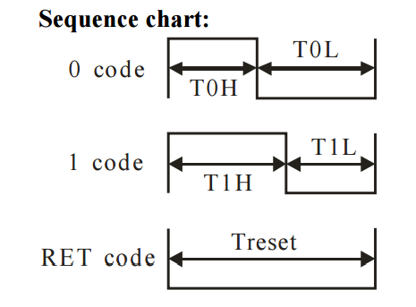
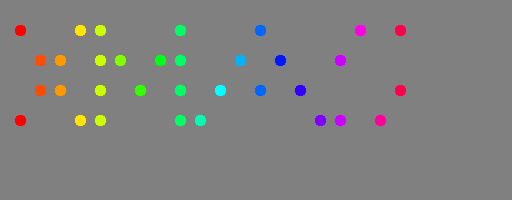
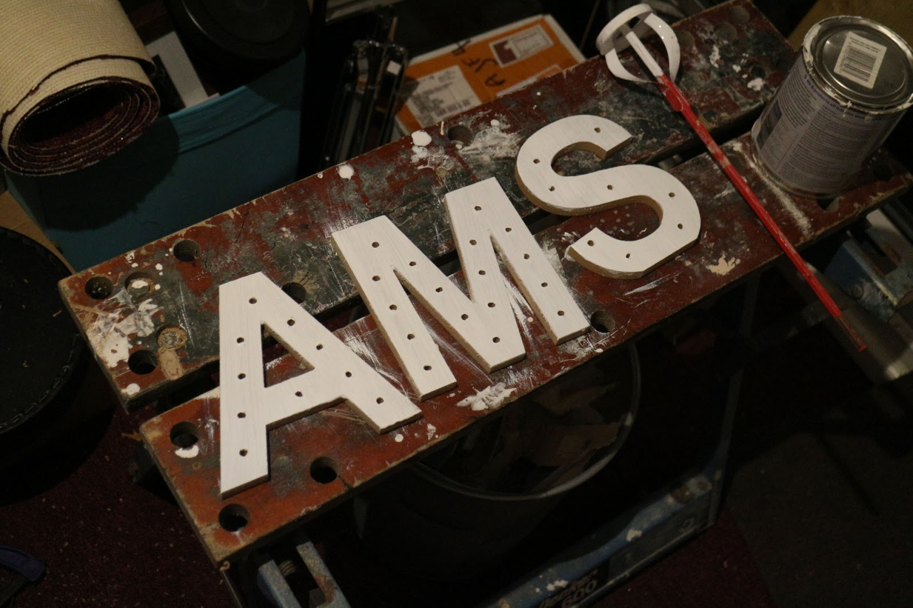
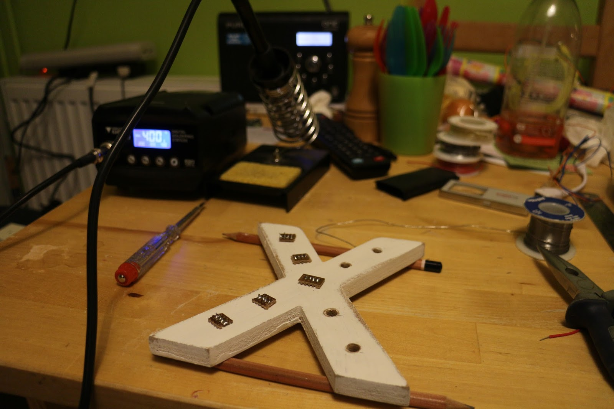

Xmas Web Ornament
What on Earth?
A visit to the garden centre
That looks nice
It's a bit basic. I could make one much better than that.
Ooh, that would be lovely!
*mutter*
How hard can it be?
NeoPixels
From the Summer 2013 Cambridge Jam
Pi Zero
It's smaller and cheaper than an Arduino!
But can it do real-time?
How do NeoPixels work?
How do NeoPixels work?
DMA to the rescue
Hard-real time
Dedicated sillicon
- runs alongside CPUA well-solved problem!
- rpi_ws281x
rpi_ws281x
struct ws2811_device;
typedef uint32_t ws2811_led_t; //< 0x00RRGGBB
typedef struct
{
int gpionum; //< GPIO Pin with PWM alternate function, 0 if unused
int invert; //< Invert output signal
int count; //< Number of LEDs, 0 if channel is unused
int brightness; //< Brightness value between 0 and 255
ws2811_led_t *leds; //< LED buffers, allocated by driver based on count
} ws2811_channel_t;
typedef struct
{
struct ws2811_device *device; //< Private data for driver use
uint32_t freq; //< Required output frequency
int dmanum; //< DMA number _not_ already in use
ws2811_channel_t channel[RPI_PWM_CHANNELS];
} ws2811_t;
int ws2811_init(ws2811_t *ws2811); //< Initialize buffers/hardware
void ws2811_fini(ws2811_t *ws2811); //< Tear it all down
int ws2811_render(ws2811_t *ws2811); //< Send LEDs off to hardware
int ws2811_wait(ws2811_t *ws2811); //< Wait for DMA completion
The Internet of Tragically Over-Hyped Things
A Web Interface
Python
- simple, and lots of HTTP supportC
- needs to talk to ws2811 driver...
Doing two things at once
def main():
print("{0} is running.".format(sys.argv[0]))
bo = BitmapOut("test", single=True)
t = threading.Thread(target=web_server)
t.daemon = True
t.start()
routine = rainbow
while True:
for timeout in routine():
bo.render(PIXELS)
try:
routine = MESSAGE_QUEUE.get(block=True, timeout=timeout)
break
except queue.Empty:
pass
return 0
POST handler
post_body = post_body.decode("utf-8")
(key, value) = post_body.split("=")
routine = {
"rainbow": rainbow,
"larsen": larsen,
"snowflakes": snowflakes
}[value]
MESSAGE_QUEUE.put(routine)
self.send_response(200)
self.send_header("Content-type", "application/json")
self.end_headers()
self.writeutf8('{ "status": "OK" }');
Larsen scanner
def larsen():
DIM_FACTOR = 0.9
OVERSHOOT = 10
for pixel in PIXELS:
pixel.set(0, 0, 0)
for i in range(0, len(COLS) + OVERSHOOT):
for idx, li in enumerate(COLS):
for pixel in li:
if idx == i:
pixel.set(0xff, 0, 0)
else:
pixel.dim(DIM_FACTOR)
yield TIMEOUT
for i in range(len(COLS)-1, -OVERSHOOT, -1):
for idx, li in enumerate(COLS):
for pixel in li:
if idx == i:
pixel.set(0xff, 0, 0)
else:
pixel.dim(DIM_FACTOR)
yield TIMEOUT
Testing!
The BOM
LEDs:
Cool Components 'addressable' 5mm - £4.00 for 10Timber:
MDF nightmare!Pi Zero:
Lucky timing...Veroboard:
OffcutsWire:
Single core vs multi core
Manual labour...
So much soldering!
Live Demo...
The End
/